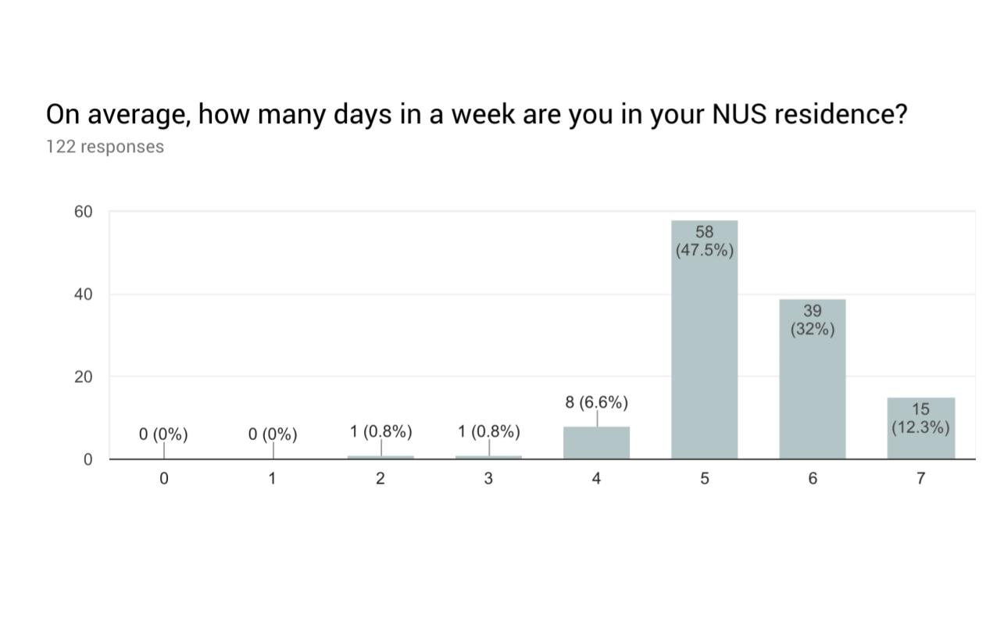
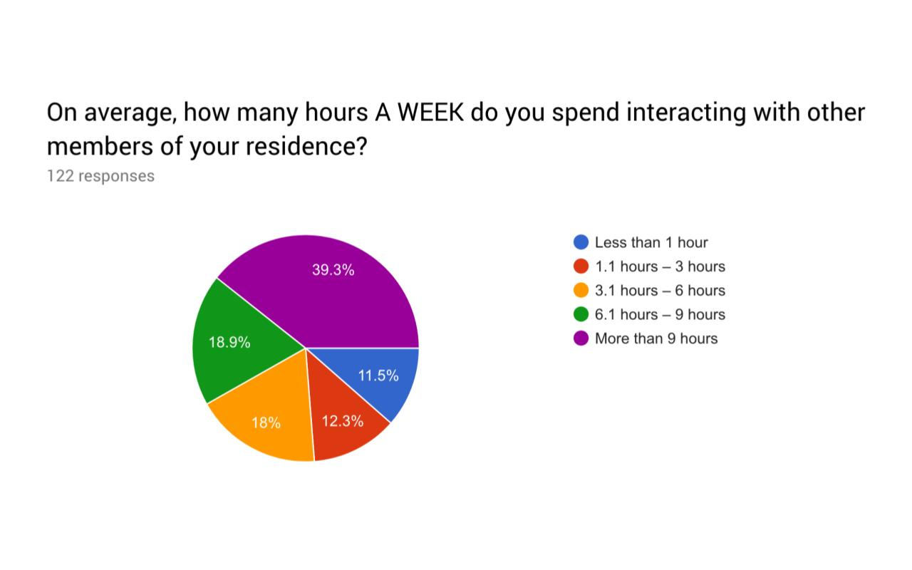
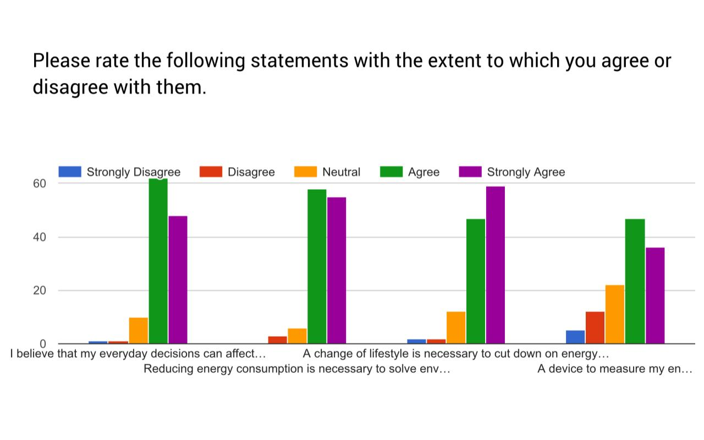
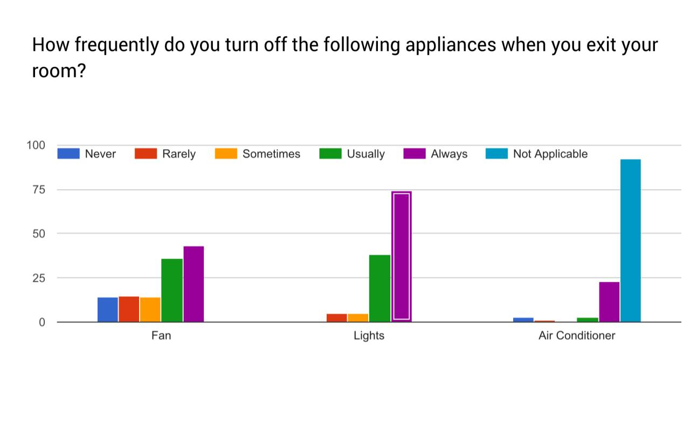
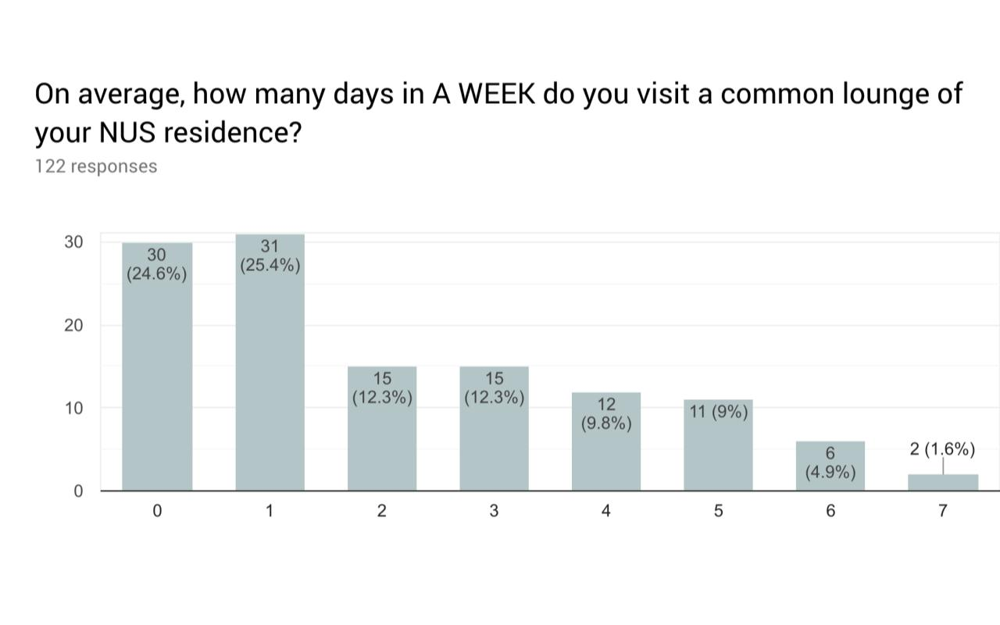

Campus residents in the National University of Singapore aren't made to pay for utilites by the meter. As a result, heaps of energy is wasted every academic year when residents move back in and shrug at the inconsequential act of leaving their utilities on. BearBulb is an ongoin project that aims to address the problem of using energy utilities irresponsibly in the absence of perceived consequences for doing so.
This project is being undertaken for partial completion of CS3240 – Interaction Design, the landmark class on UI/UX design hosted by the School of Computing, National University of Singapore.
Conceptualise a product that would address the problem of irresponsible energy wastage by NUS Residents.
This project was done in a team of four researchers and designers. As NUS students ourselves, we were able to sample and interview several NUS residents who were either personal friends or referred contacs. Through an iterative approach, we conducted interviews to locate users' pain points and habits, designed prototypes to test with our users, and conducted contextual inquiries and walkthrough tests with users to design a high-fidelity prototype that might address the identified problem,
Mid September 2018 – Ongoing
Pen and paper, Google Slides, Adobe XD
An iterative approach to user reserach was adopted to ensure that production could be agile, and that users could be kept in close consultation during the design process.
NUS residents are typically young, undergraduates, and so we described our users to be:
For our user study, we decided to begin our search with a survey to understand the scope of the problem from a macro point of view. We administerd a survey using Google Forms to find out how much time NUS residents spend on campus, how close they are to their community, how they manage their electrical appliances, and to what extent they feel like saving electricity is important to them.
We disseminated a survey through our personal contacts, understanding that many of them stay on campus themselves. We collected a total of 127 responses, all of whom stay in an NUS residence. More than 90% of whom are in their NUS residence for at least 5 days a week, and 76.2% of whom spend more than 3 hours interacting with other members of their residence.
 Through the survey, we found that many residents do believe that energy conservation is important. However, we also found that many residents don't turn off their appliances when they exit their rooms, with about 11% of them admitting that they never switch off their fan when they exit their room. We also found that 50% of residents visit a common lounge of their residence oless than twice a week. The communal use of common lounge appliances helps to reduce the individual usage of such appliances, especially those that consume a lot of energy, such as air-conditioning.
  At the end of the survey, we asked respondents if they would be willing to participate in future interviews and usability tests as part of our endeavour. In so doing, we were able to use the demographic, attitudinal and behavioural data from our survey to select appropriate respondents for our user-study.
Semi-structured interviews were conducted with a variety of participants. From our survey, we selected 5 respondents from 3 different residences, who vary in their years of candidature (i.e. we selected 1 year-1 respondent, 2 year-2 respondents, 2 year-3 respodnents, and a final-year undergraduate). As our survey's responses were largely from an undergraduate cohort, we approached a residential fellow personally (convenience sampling) to ask if they would be able to participate in our qualitative interviews. As such, we ensured diversity in our limited sampling.
Semi-structured interviews were one-to-one interviews that aimed to explore in-depth the lives, habits, and problems that are faced by the target users. Semi-structured interviews are guided by prepared questions, but remain open to being framed by the responses gathered during the interview iteslf. As such, questions are likely to change and be adjusted during the interview itself, in order to ensure that the problems encountered by users emerge from the users themselves.
When we received their feedback, we would triangulate research findings through a thematic analysis, guided by an affinity diagram that contained quotes of their responses.
Our interviews showed that residents were deeply involved with their community. This could either be a good or a bad thing, in that the community was seen to be interesting (Theme: Interesting Community Life) and hence, they would spend time and energy getting to know their peers, or in that community can often be divisive, but this was often described while talking about the good things about community (Theme: Divisive Social Culture). In total, residents whom we spoke to are generally involved with their community, and even if they did not spend that much time interacting with their peers, they had a firm understanding of the social environment they were in (Broader Theme: Community Involvement).
A significant theme that emerged was that of Resignation (Broader Theme: Resignation). This sense of resignation applied both in nonchalant attitudes towards energy conservation, and in general. While our interviews were meant to touch on residents' energy habits, we also noticed that there was resignation expressed towards community life. For example, one resident, a final-year student, expressed resignation towards having fewer and fewer familiar friends living in campus as not many senior-year undergraduates decide to continue to stay on campus as they progress through their candidature. There was also a resignation towards things that were perceived to be hard to change. Uur respondents, whether or not they were aware of the effects of energy wastage, felt that it was not worth caring about because they felt that their individual actions were neglible (hence, "Aware but Don't Care" and "Unware but Don't Care").
Finally, we discovered that residents are likely creatures of habit (Broader Theme: "Creatures of Habit"). Our repsondents could tell us with confidence and ease how they are currently spending their time, where they would be in the coming days, and what their forthcoming weeks would be like.
In total,a grand theme of "Only invovled with things perceived to matter" was surfaced". Residents are very cognisant of who, what, and how to invest their time and energy. They involve themselves or absent themselves from social events, while remaining very cognisant of the social environment they are placed in. Knowing such, they guide their behavious and habits around what they perceive to be important,
BearBulb aims to make energy usage an issue worth being conscious about. We aimed to do this through two ways: 1) Symbolising energy through affective means, and 2) Make it easy to check energy usage
To do this, we proposed that an animal character be created for each user, and that the animal's environment would adjust according to the user's energy usage. Each user is recommended a certain amount of energy dependent on the type of room they stay in. This amount is to be determined by the amount of energy typical room appliances consume, and the survey data we collected.
We are currently in the midst of creating the "Yard", the environment that houses each users' assigned animal character. My role in this project was to conceptualise and design a dashboard that rests next to users' yard, which aimed to inform users of their energy usage.
1. Daily View
Personal energy usage is categorised by "Daily", "Weekly", "Monthly" and "This Sem" tabs. Our respondents informed us that this method of organising time was in line with how they scheduled and organised their habituated routines. Hence, the model of representing information in BearBulb aligns with the mental model that users have of their daily lives.
The first tab displays' users' Daily Usage. The first instance of this tab shows a brief overview of their total usage for the day against the recommended amount that they are given.
Users are able to then further explore the granular details of their daily use if they would like to. This includes the breakdown of energy usage by appliance, and the amount of energy used by the hour.
2. Weekly View
In Weekly View, users are able to scroll down to view past weeks' usage. If they want to, they can then expand to reveal more granular details about their weekly usage.
3. Monthly View
Monthly initially provides an overview of the months wherein the user has stuck to their recommended limi. If they want to, they can then expand to view more specific details to see how they have performed specific to that month.
Users are also able to filter the months that they would like to see, making it easy to compare between their previous months.
3. Semester View
Finally, both students and faculty arrange their lives according to the academic calendar. Hence, a "This Sem" view was created so that they can view their progress across the particular semester that they are part of.
The semester view display prominently the user's total expenditure for the currrent semester so that they can immediately how much they've spent. As they scroll down, this amount is retained at the top of their screen while they are able to view the specific weeks that have passed.
You can try out the current segment of BearBulb here for yourself:
{kind=link}
{kind=link}